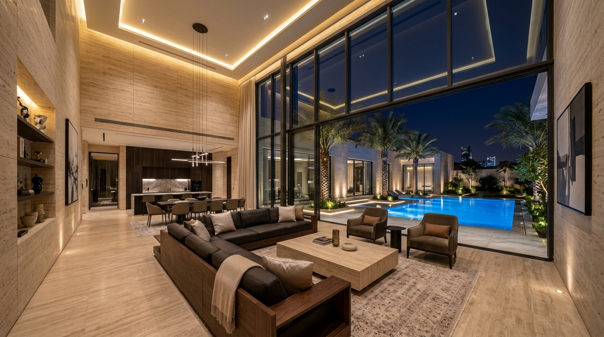

مساحة لحياة
تليق بتطلعاتك.
فيلا معاصرة في حي النرجس، الرياض · بيت وحكاية

عمارة معاصرة. تفاصيل مدروسة.فيلا النرجس
3,250,000 ر.س
واجهة شمالية · 320 م²
5 غرف نوم · 4 دورات مياه
معاينة تصميم فقط — لا تُرسل أي طلبات حقيقية.
24عمليات سابقة
18إعلانات المنطقة
320المساحة · م²
8خدمات قريبة
كل ما تحتاجه، على مقربة.
مساحات مفتوحة يملؤها الضوء، وتفاصيل تمنح كل يوم إيقاعاً أهدأ. تعرف على العقار والحي والخدمات المحيطة في تجربة واحدة واضحة.
حياة يومية أسهل
حديقة الحي5 دقائق مشياً
مدارس ومراكز تعليمية8 دقائق بالسيارة
مقاهٍ ومتاجر يومية3 دقائق مشياً
المسافات والأرقام للتصميم فقط.